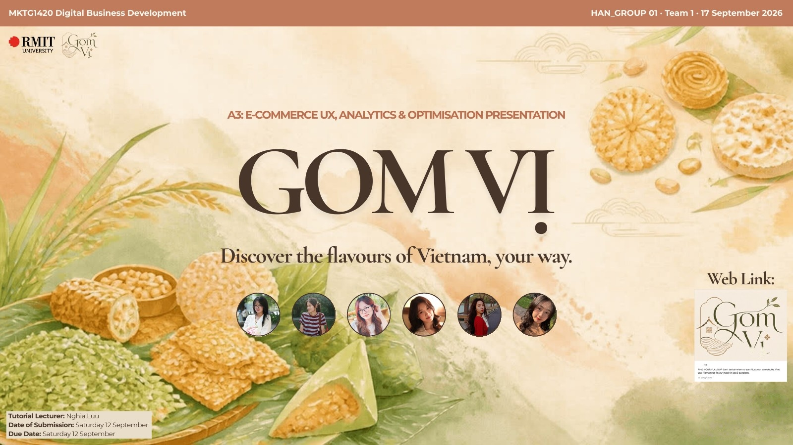
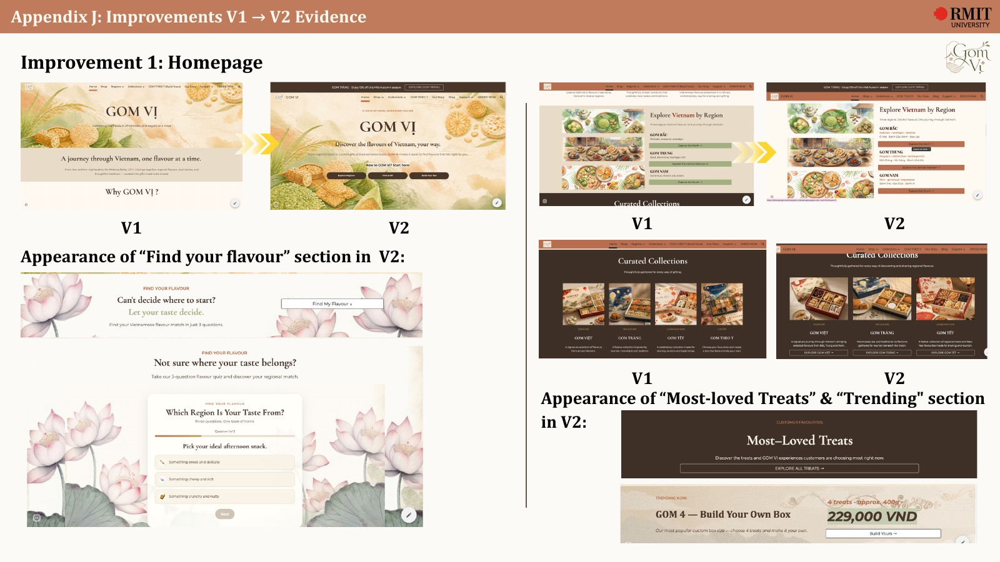
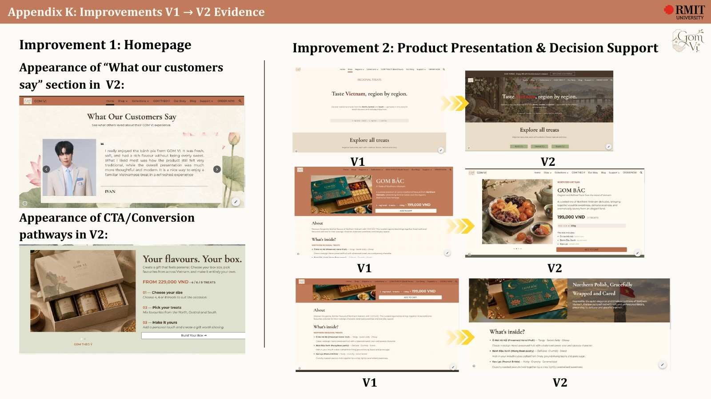
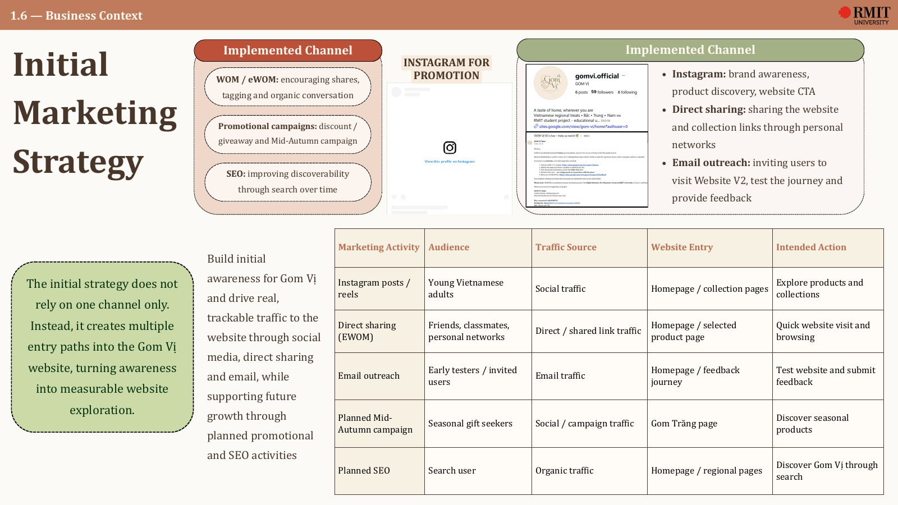
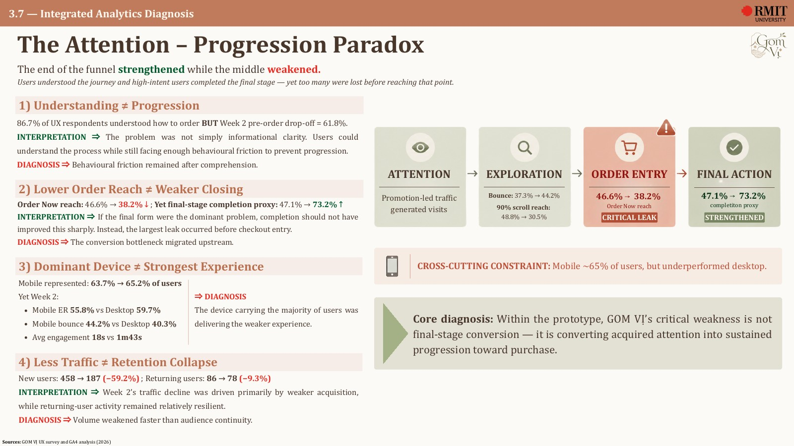
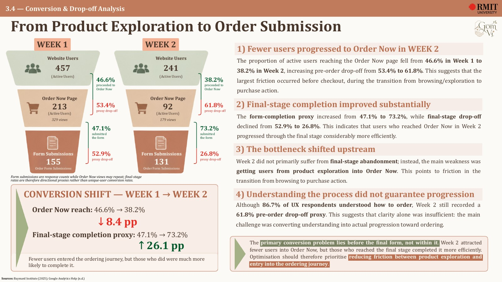
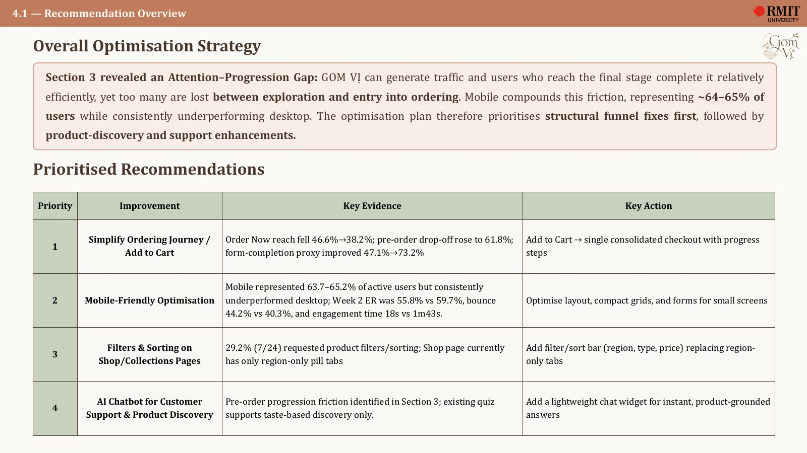
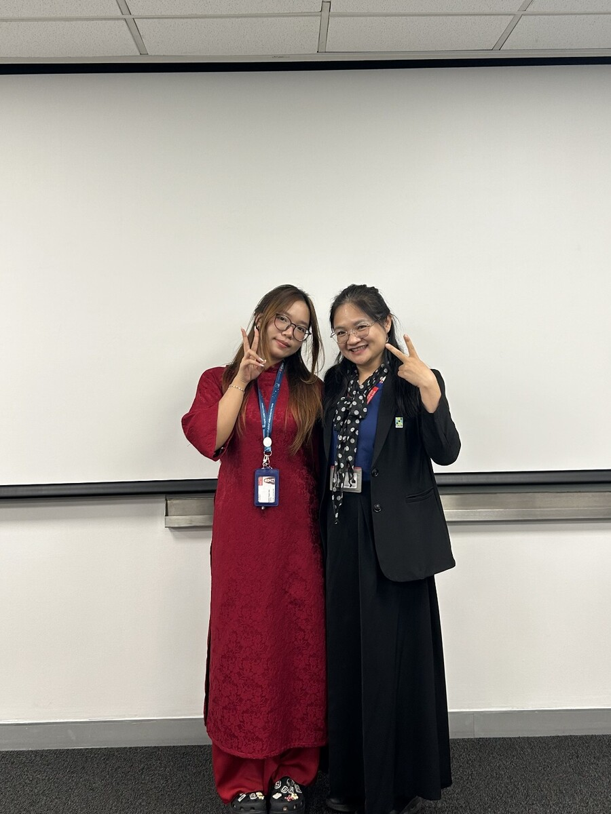
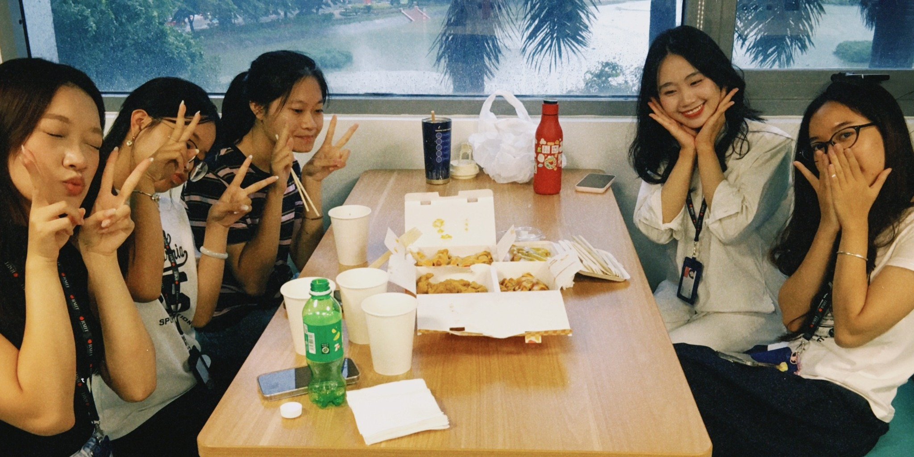

GOM VỊDesign → Measure → Optimise.
An e-commerce prototype for discovering Vietnamese regional snacks, developed through website design, UX iteration, acquisition planning and GA4 analysis.

Regional flavours,
one journey.
GOM VỊ is an e-commerce concept that brings traditional Vietnamese snacks from different regions into one modern discovery experience. The digital offer combines individual regional treats, curated gift collections and Gom Theo Ý, a build-your-own box journey.
The website was designed around discovery rather than a generic catalogue: users can explore by region, understand product origins and stories, choose ready-made collections or personalise their own box.
Lead it.
Design and diagnose it.
I served as the team leader for this six-person project. My core ownership covered the design of GOM VỊ’s shopping journey across the Homepage, Shop and Gom Theo Ý / Build Yours experiences in both V1 and V2, alongside the project’s GA4 analysis across Sections 3.1–3.7.
I also shaped much of the website’s visual direction and branding, coordinated work across the team, supported the optimisation recommendations and managed order-form responses during testing.
From V1
to a clearer V2.
V2 reorganised the website around clearer shopping intentions: discover the brand, browse individual treats, explore by region, shop curated collections, personalise a box or move towards ordering.
The redesign introduced stronger homepage orientation, clearer product entry points, more explicit CTAs, richer product details and social proof. Team A/B testing then compared the two versions.


Build attention,
then make it measurable.
The initial marketing plan combined Instagram content, eWOM/direct sharing, email outreach and planned SEO to create multiple entry paths into the website rather than relying on a single channel.
Instagram acted as the main brand-awareness and product-discovery channel, while GA4 later showed Organic Search emerging as a small but higher-intent source.

Organic Search appeared in Week 2 with 19 sessions (4.92%) and the longest average engagement time at 1m 12s. The volume was still small, but the pattern supported continued SEO and discovery-led landing-page development.
Traffic was not
the core problem.
I owned the GA4 analysis across Sections 3.1–3.7. The most important finding was an Attention–Progression Gap: GOM VỊ could generate attention, and users who reached the final stage completed it more efficiently, but too many were lost before entering the ordering journey.
The analysis also showed a cross-cutting mobile constraint: mobile represented roughly two-thirds of users while consistently underperforming desktop.


Turn the diagnosis
into action.
The optimisation plan prioritised fixes according to funnel evidence rather than adding features for their own sake. Structural progression and mobile usability came first, followed by product-discovery and support enhancements.

Built with a team,
presented as a system.
I led the six-person GOM VỊ team, coordinating the project while retaining direct ownership across the core website journey and complete GA4 analysis. The final presentation brought the business concept, UX work, marketing activity, analytics and optimisation plan together.



Want the
details?
This case study highlights the work most relevant to website design, UX, acquisition and analytics. The full 52-page presentation embedded below includes the detailed research, methodology, raw evidence and recommendation rationale behind the project.